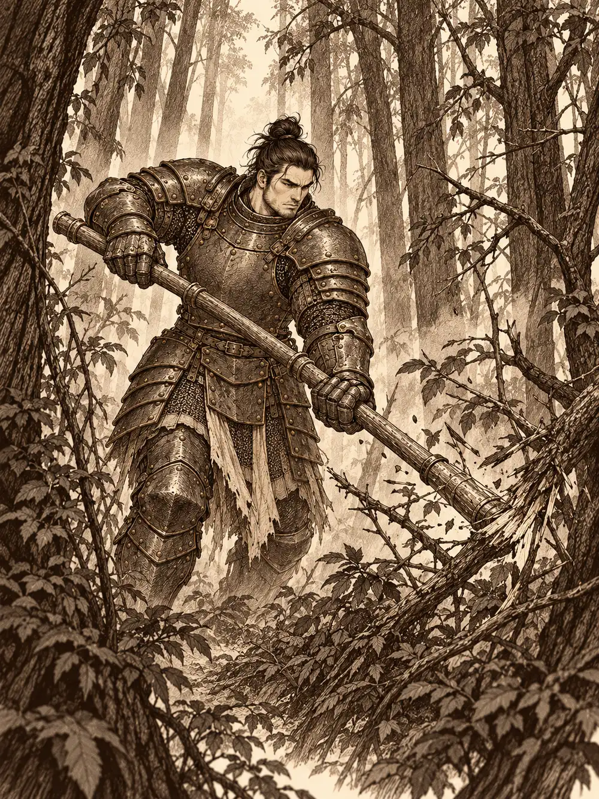

Capítulo 1
El bosque de cuchillas
Libro I · Los cazadores de Ukio
Llevaban tanto tiempo recorriendo juntos los caminos de Kuroto que ya no recordaban quién había empezado a caminar al lado de quién. Habían cazado yokai en arrozales y en desfiladeros, habían dormido bajo aleros ajenos y habían enterrado más de un susto entre risas. Eran cuatro, y cualquiera que los viera llegar entendía enseguida que no venían a vender telas.
Ukio los recibió con olor a tierra regada y a flores. Era un poblado pequeño de casas de madera, bajas y apretadas, con huertos que se derramaban hasta el borde de los senderos y vecinos que levantaban la vista de la azada para mirarlos pasar. No era para menos. Delante iba Tokugawa, un paladín enorme, con la armadura sonando a cada paso y el arma al hombro como quien carga una viga. A su lado, Leonardo, una tortuga de dos metros con caparazón, katana a la cintura y la calma de un samurái. Más atrás, Sun Gukon, un mono de pelaje rojizo que caminaba con el bastón cruzado sobre la nuca y la cola balanceándose a su ritmo, y Talos, un elfo de paso silencioso que parecía estar siempre un poco más lejos de lo que estaba.
Había en Ukio un herrero, un alquimista y una taberna grande, la construcción más alta del pueblo. Hacia allí fueron, porque el camino había sido largo y el sake no se sirve solo.
El tabernero secaba cuencos detrás del mostrador y no hizo reverencia alguna al verlos entrar. Era un hombre de gesto tranquilo, de manos rápidas, que sirvió cuatro cervezas y cuatro copas de sake en una bandeja y se quedó mirando a los recién llegados con una curiosidad que no se molestó en disimular.
"¿De dónde vienen unos viajeros como ustedes?", preguntó.
Alguno de ellos pronunció el nombre del Loto Blanco con cierta solemnidad. El tabernero arqueó las cejas; nunca había oído hablar de tal cosa, y nadie en la mesa se ofreció a explicárselo. Prefirió ir al grano. Se llamaba Kitaro, dijo, y en Ukio tenían un problema.
Al norte del pueblo se extendía un bosque espeso al que los vecinos llamaban el Bosque del Infierno. El nombre sonaba peor de lo que era, o al menos lo había sonado hasta hacía poco: de allí sacaba la aldea la fruta que comía y vendía, y nadie podía permitirse dejar de ir. En el río que lo cruzaba vivían algunos kappa, criaturas que no solían molestar a nadie si nadie las molestaba. No eran ellos los que preocupaban a Kitaro. Lo que bajaba últimamente del bosque era otra cosa.
"Es como una comadreja enorme", dijo, y bajó la voz sin darse cuenta, "con cuchillas en las manos y en los pies. Los que sobreviven vuelven con cortes por todo el cuerpo. A algunos les falta un brazo. A otros, una pierna".
Los cazadores se miraron. Uno quiso saber cuánto se pagaba aquello; otro declaró que a él, con una fiesta, ya lo habían convencido, y un tercero aseguró que venía por honor. Kitaro les prometió una celebración como no se había visto en Ukio si volvían con el problema resuelto, y el asunto quedó zanjado entre risas, un último trago y una reverencia del tabernero, que se marchó a atender otra mesa con la cara de quien acaba de apostar todo lo que tiene.
Antes de partir, Tokugawa pasó por la herrería con la idea de vender unas jabalinas que le sobraban. El herrero las miró con buenos ojos, pero confesó que no tenía con qué pagarlas. Las estanterías del taller estaban medio vacías y el hierro que quedaba tenía manchas de óxido. Acordaron que las dejaría allí y que ya hablarían del dinero cuando hubiera.
Una vecina les indicó el camino: hacia el norte, sin desviarse, una media hora a pie. Era fácil. Aun así, Tokugawa consiguió echar a andar en dirección contraria, y alguien tuvo que alcanzarlo y darle la vuelta por el codo.
A los diez minutos el pueblo ya había quedado atrás y el bosque empezó a crecer delante de ellos como una muralla. Habían oído hablar de él, pero ninguno lo había visto de cerca. Los árboles estaban tan juntos y las copas tan cerradas que costaba entender por dónde entraba la luz. Una niebla baja se arrastraba entre los troncos. El camino, prudente, torcía hacia el oeste para rodearlo y perderse hacia las montañas; el bosque quedaba a la derecha, oscuro, inmóvil.
Tokugawa no rodeó nada. Levantó el arma y empezó a abrirse paso a golpes, rama a rama, en línea recta, con la determinación de un buey.
Leonardo se detuvo en la linde. Miró la espesura un buen rato y luego habló despacio, contando las sílabas con los dedos:
"Sol entre las ramas. El bosque se viste de luz. Sombra que danza".
Anunció que, a partir de ese momento, hablaría en haikus. Nadie supo si era una advertencia o una amenaza.
Alguien sacó una cuerda con la idea de atar al paladín por la cintura, para que no se perdiera en su avance. Tokugawa, que no se había enterado de nada, echó el brazo hacia atrás para descargar otro golpe contra la maleza, y el codazo mandó al suelo al compañero que se le había acercado. Cuando se dio cuenta, se agachó a su altura, le dio un beso en la frente y le pidió perdón. Después siguió cortando.
"Sendero oscuro", recitó Leonardo a su espalda. "Cuida tu paso: aquí la sombra vigila".
"Si no me hablas normal, no te voy a entender en toda la mañana", contestó Tokugawa sin volverse.
Sun, mientras tanto, había decidido que la mejor manera de orientarse era desde arriba. Trepó por el tronco más alto que encontró, ágil, ligero, y a media altura se dio de bruces con una rama que no había visto. Cayó, pero no llegó al suelo: se quedó colgando cabeza abajo, sujeto por la cola, balanceándose despacio con cara de no haber planeado aquello. Tokugawa lo señaló con el arma.
"Deja de hacer monerías, que nos espera la cerveza".
Así, entre tropiezos y versos, el bosque se fue abriendo. Al cabo de un rato las ramas desaparecieron delante de Tokugawa y la luz cambió. Habían llegado a un claro donde los árboles escaseaban y la niebla era más densa, blanca y húmeda, pegada a la piel. Al fondo se oía correr un riachuelo. Sun, ya en tierra, miró el agua y no pudo resistirse:
"Bajo el sol ardiente, el río fluye sin fin. Qué calor hace".
Leonardo no dijo nada. Su silencio fue el peor de los haikus.
Al principio solo eran tres figuras pequeñas junto a la orilla, más bajas que cualquiera de ellos, apenas sombras en la bruma. Después se movieron. Los cazadores vieron unos ojos que los observaban desde el blanco y las figuras se pusieron en pie, se acercaron un poco, y entonces las reconocieron: kappa. Parecían tortugas que hubieran aprendido a caminar sobre dos patas, con garras en lugar de manos y, en la coronilla, un hueco lleno de agua que les brillaba como un cuenco.
Sun le dio un golpecito a Leonardo en el hombro y le preguntó si era familia suya. El samurái no le contestó.
Kitaro había sido claro: no atacaban si no se les provocaba. Pero la niebla engaña, y cuatro desconocidos armados avanzando hacia la orilla eran provocación suficiente para cualquiera. Las criaturas se inquietaron, se agazaparon, y en un instante todo se volvió agua salpicada, gritos y acero. Uno de los kappa quedó ennegrecido por la magia. Otro intentó escabullirse hacia el río y el bastón de Sun le alcanzó la cabeza antes de que tocara el agua. El último cayó también bajo un golpe del monje. Leonardo salió del combate con heridas, y Tokugawa le apoyó la mano en la espalda; una calidez tranquila pasó de la palma del paladín al cuerpo de su compañero y le devolvió un poco de aliento.

Cuando la orilla volvió a quedar en silencio, Talos se arrodilló junto a los cuerpos. El hueco de la cabeza estaba vacío y, por dentro, era carnoso, blando, parecido a un cerebro sin llegar a serlo. El elfo recogió un poco de agua del río y la vertió en él. El tejido reaccionó, la absorbió con un leve estremecimiento, pero la criatura siguió muerta. Entendieron entonces para qué servía aquella reserva: era lo que permitía a los kappa respirar lejos del agua. Talos se quedó mirando el cadáver un momento más de lo necesario. Habían aprendido algo sobre los yokai, y nada de lo aprendido les devolvía la vida.
Siguieron el río. La corriente se desviaba por un costado y, a la izquierda, se abría otro claro distinto, más inquietante. Los troncos que lo rodeaban estaban marcados de arriba abajo por cortes limpios, profundos, como de cuchilla. Algunos árboles habían sido cercenados por completo y yacían en el suelo con la madera clara al aire.
"Chicos", dijo Sun en voz baja, "creo que nos acercamos".
Intentaron avanzar sin ruido. El monje se agazapó entre los matorrales, resbaló y levantó un remolino de hojas secas que sonó como un aplauso. Durante un instante no pasó nada.
Después algo cortó el aire.
Tokugawa sintió un silbido junto a la mejilla y un ardor inmediato: tenía un tajo en la cara y ni siquiera había visto qué se lo había hecho. Golpeó a ciegas y el impacto derribó a la criatura, que rodó por el suelo y se quedó a cuatro patas, chillando, en posición de ataque. Era una comadreja del tamaño de un perro grande, de pelaje erizado, con unas hojas curvas como pequeñas guadañas en lugar de garras. Kitaro no había exagerado.
Se movía demasiado deprisa para seguirla con la vista. Pasó junto a Tokugawa empujándose contra su armadura y se lanzó sobre Sun con las cuchillas en alto. El primer tajo le abrió el pecho al monje y la sangre saltó en un abanico rojo. El segundo llegó antes de que pudiera recuperar el equilibrio. Sun cayó de rodillas, medio muerto, con el bastón todavía en la mano.
Tokugawa se interpuso. Lo que salió de él entonces no fue un grito ni un golpe, sino una presencia que llenó el claro, y la comadreja retrocedió con miedo en los ojos. El paladín la empujó lejos de sus compañeros y plantó los pies delante de ellos.
"No te acerques a mis amigos".
La bestia lo miraba de reojo, encogida como un gato acorralado, pero buscaba los costados. Talos murmuró algo, una plegaria vieja a la Reina Cuervo, y su cuerpo se deshizo en sombra para reaparecer entre los árboles, fuera de la vista del enemigo, con el arco tenso. Las chispas que Tokugawa lanzó contra el yokai le erizaron el pelaje sin hacerle daño alguno. Leonardo le abrió un corte en la cola. Sun, arrastrándose hasta la espalda del paladín, se tragó una poción a toda prisa y volvió a levantar el bastón con la rabia de quien acaba de ver su propia sangre en la hierba.
La pelea se alargó. La comadreja clavó una cuchilla en el caparazón de Leonardo, rebotó, saltó hacia otro lado, recibió una flecha de Talos desde la espesura y siguió buscando carne. Poco a poco, sin embargo, empezó a sangrar más de lo que hería. Fue Leonardo quien la detuvo. Un solo movimiento, limpio, por detrás del cuello. La cabeza quedó colgando de un jirón de piel y el cuerpo se desplomó todavía agitando las hojas en el aire. El samurái sacudió la katana, la limpió con cuidado y la envainó, porque una katana no se guarda manchada de sangre. No pronunció ningún haiku. El silencio le pareció más adecuado.
Entonces alguien, con más prisa que puntería, arrojó un frasco de curación que debía haber ido a parar a un compañero. El líquido cayó de lleno sobre el cadáver.
La comadreja se levantó.
Con la cabeza colgando sobre el pecho, tambaleante como una marioneta mal atada, el yokai volvió a ponerse en pie y miró a su alrededor con la misma sorpresa que los cuatro cazadores. Fue Tokugawa el primero en reaccionar: descargó el arma y lo partió casi por la mitad. Sun le dio un último bastonazo por si acaso, con un gruñido que significaba algo así como "y no te levantes más". Esta vez no se levantó.
Nadie quiso marcharse con las manos vacías. Le cortaron la cabeza para que en Ukio creyeran la historia, y alguien separó con un cuchillo las cuchillas de las patas. Eran pequeñas y curvas, como hojas de guadaña de mano, fáciles de guardar en un zurrón.
Volvieron por el pasillo que Tokugawa había abierto a golpes y, al salir del bosque, el sol les dio en la cara. Caía la tarde. Los campos de Ukio brillaban dorados y el pueblo parecía más pequeño y más alegre que por la mañana.
Leonardo y Talos fueron directos a la taberna. Kitaro los vio entrar heridos, cansados, y les abrió dos habitaciones sin hacer preguntas. Tokugawa, en cambio, dio vueltas y más vueltas buscando la taberna, aunque era el edificio más grande del pueblo.
En la herrería, las cuchillas acabaron sobre el banco del artesano junto a una pregunta: si con aquello se podía forjar algo útil. El herrero no respondió. Tomó una de las hojas, la giró a la luz, palideció y salió corriendo a la calle.
"¡Han matado al kamaitachi!", gritaba. "¡Lo han matado!".
En pocos minutos media aldea se había echado a la plaza. Kitaro salió de la taberna secándose las manos y señaló a los forasteros.
"Han sido ellos", dijo. "Son nuestros héroes. Y hay otros dos durmiendo en mi casa".
Sun Gukon no necesitó más. Se subió a donde pudiera verlo todo el mundo y empezó a contar la batalla: los saltos, los tajos, la sangre, su propia valentía en el momento decisivo. Sus oyentes se miraban entre ellos y no terminaban de creérselo, porque el monje adornaba cada golpe con tres más. Pero el herrero repetía que había visto las cuchillas, que estaban allí, sobre su mesa, y eso bastaba. La gente empezó a tocar la armadura de Tokugawa como quien toca una reliquia, y el paladín, encantado, anunció una ronda para todos.
La fiesta empezó sin esperar a nadie. Hubo sake y cerveza, música, hombres que cantaban saltando sobre los bancos y mujeres que se sentaban junto a Tokugawa y Sun para oír otra vez la historia, que cada vez era un poco más larga. Al monje todavía le sangraba una ceja. Alguien le sugirió que quizá también él debería descansar, y Sun pidió otra cerveza.
Cuando Leonardo y Talos bajaron por fin de sus habitaciones, el ruido les llegó antes que la luz. Kitaro apareció desde la cocina cargado con bandejas: arroz, pato lacado, platos que nadie supo nombrar y que nadie dejó sin probar.
"Ya veo que están despiertos", les dijo. "Espero que vengan con hambre".
Comieron hasta que no pudieron más. Afuera, sobre los tejados de Ukio, la música seguía subiendo hacia un cielo sin nubes, y desde lejos el pueblo entero parecía una lámpara encendida al borde del bosque. Los cuatro cazadores habían cumplido el encargo, y en Kuroto quedaban muchos yokai por cazar.